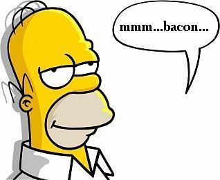
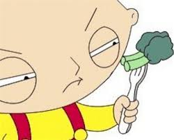

Who cares about Michelin stars when you can't afford any of the restaurants? Can't trust Yelp because of these wanna be foodies clogging up the review board. Broccoli & Bacon uses our patented bacon & broccoli grading system to give you straight forward and simple reviews so you can make the best decision for food.
2 Bacons: Can go once a month!
1 Bacon: A solid place to eat.